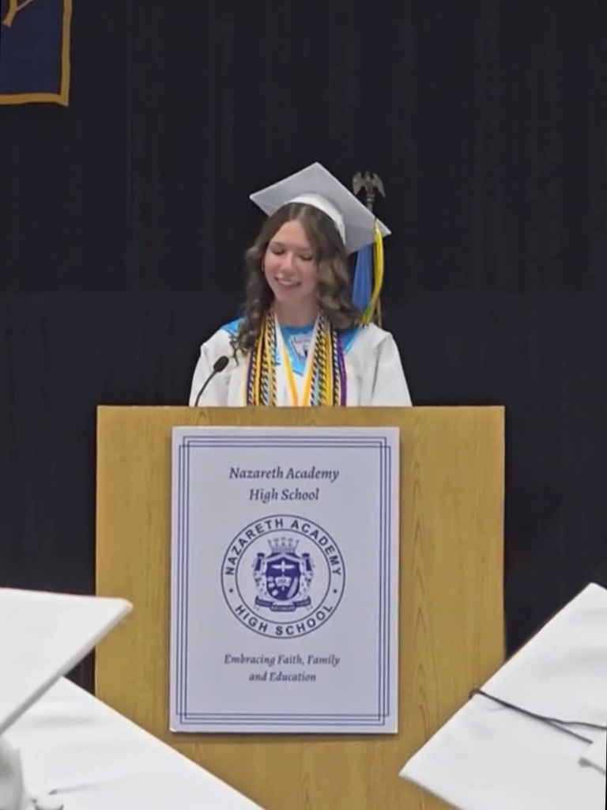

01
Mechanical / Prototype
EDA Umbrella
A prototype automated umbrella system for dog houses that opens and closes based on changing weather conditions to help keep pets sheltered.
Available for summer opportunities
I’m Annalise, a first-year engineering student at Lehigh University interested in biomechanical engineering and turning big questions into useful, human-centered things.

01 / Personal Projects
My prototype automated umbrella for dog houses, EDA Umbrella, is a small design idea focused on keeping pets comfortable and protected with a simple, responsive system.
Mechanical / Prototype
A prototype automated umbrella system for dog houses that opens and closes based on changing weather conditions to help keep pets sheltered.
02 / Programming assignments
A few examples of the programming work I’ve built to learn, model, and solve problems through code.
03 / A little context
I’m studying engineering because I want to understand how things work well enough to make them work better. I’m especially interested in biomechanical engineering: the space where mechanics, biology, and thoughtful design meet to support how people move and live.
At Lehigh, my first-year foundation is taking shape through design, problem solving, mathematics, and physics. I’m excited to keep exploring how engineering can make movement safer, stronger, and more natural.
04 / Start a conversation
I’m always open to thoughtful conversations, new teams, and projects that make me look at a familiar thing differently.
acd330@lehigh.edu ↗